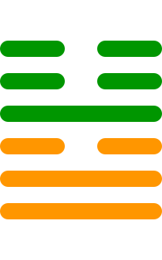

第五十四卦
归妹卦

卦辞
征凶，无攸利。
归妹卦象征归妹、婚姻与不当。卦辞意为：征伐凶险，无所利。归妹卦教导我们要避免不当的婚姻和行为。
彖传
归妹，天地之大义也。天地不交，而万物不兴。归妹，人之终始也。说以动，所归妹也。征凶，位不当也。无攸利，柔乘刚也。
彖传说：归妹，天地之大义也。天地不交，而万物不兴。归妹，人之终始也。说以动，所归妹也。征凶，位不当也。无攸利，柔乘刚也。
象传
雷泽归妹。君子以永终知敝。
象传说：雷泽归妹。君子应当效法这种精神，永终知敝。雷泽归妹，象征婚姻的终结。
爻辞
初九：归妹以娣，跛能履，征吉
归妹以娣，跛能履，征伐吉祥。
初九爻位于最下方，归妹以娣。归妹以娣，跛能履，征吉，表示以娣归妹。
九二：眇能视，利幽人之贞
眇能视，利于幽人坚守正道。
九二爻得中，眇能视。眇能视，利幽人之贞，表示幽人坚守正道。
六三：归妹以须，反归以娣
归妹以须，反归以娣。
六三爻位置不当，归妹以须。归妹以须，反归以娣，表示不当的婚姻。
九四：归妹愆期，迟归有时
归妹愆期，迟归有时。
九四爻接近君位，归妹愆期。归妹愆期，迟归有时，表示婚姻延期。
六五：帝乙归妹，其君之袂，不如其娣之袂良，月几望，吉
帝乙归妹，其君之袂，不如其娣之袂良，月几望，吉祥。
六五爻居中尊位，帝乙归妹。帝乙归妹，其君之袂，不如其娣之袂良，月几望，吉，表示帝王之妹。
上六：女承筐无实，士刲羊无血，无攸利
女承筐无实，士刲羊无血，无所利。
上六爻位于极点，女承筐无实。女承筐无实，士刲羊无血，无攸利，表示婚姻无利。